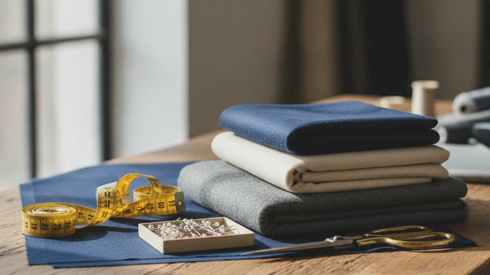
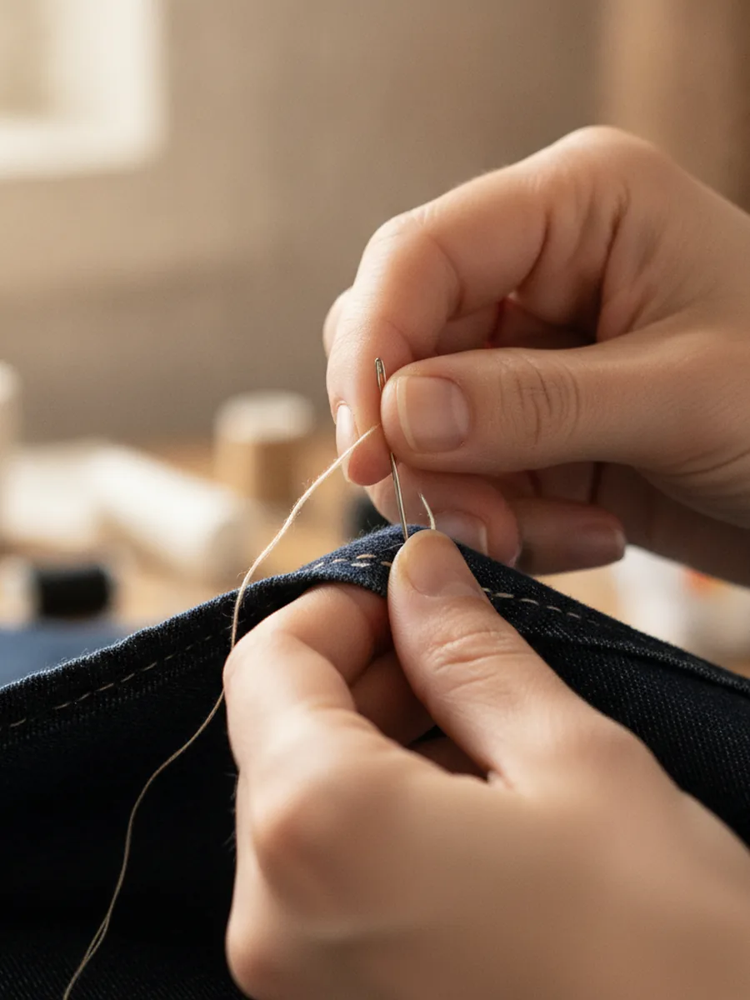
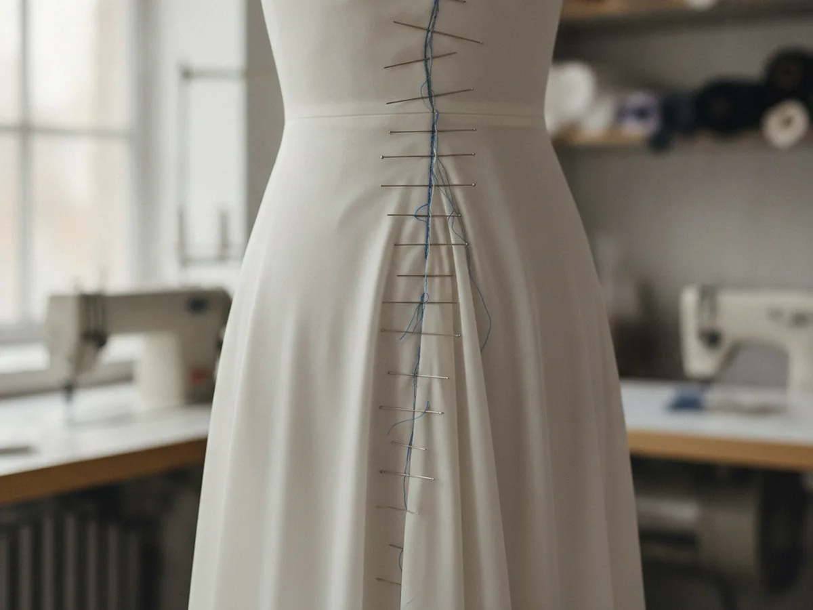
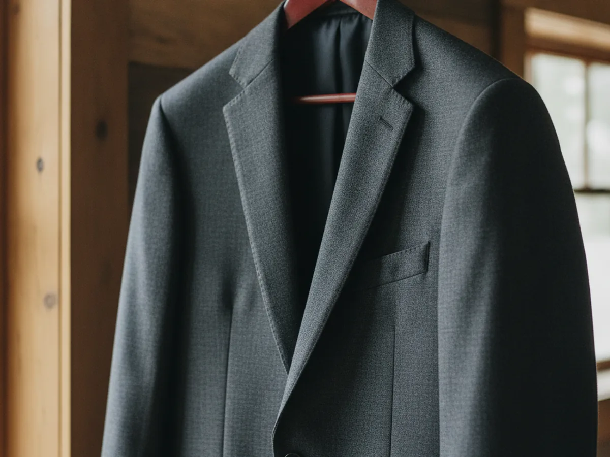

St. George, Utah · Since 2001
A quarter-century of careful hands and a perfect fit.
Pam's Alterations and Sewing has tailored, hemmed and rescued St. George's wardrobes for more than 25 years, from a wedding gown that has to be right to the jeans you want to keep. Bring it in; we'll make it fit like it was made for you.
- 25+ years in St. George
- Wedding & formal specialists
- Repairs & custom sewing


Why people keep coming back
The work is measured twice and finished by hand.
An alteration is only good if no one can tell it happened. That is the whole craft: a hem that hangs true, a seam that disappears, a gown that moves with you down the aisle. After twenty-five years, Pam has taken in, let out and rebuilt just about every garment St. George owns.
You are trusting someone with clothing that matters, sometimes clothing that cost real money. That trust is the thing this shop has spent a quarter-century earning, one careful fitting at a time.
- Measured & pinned in person
- Hand-finished details
- Straightforward, honest quotes
Services & pricing guide
What we take in, let out and make new
A guide to the work that comes through the shop. The prices below are typical starting points; your exact quote is set in person once we see the garment.
-
Hems & lengths
Pants, skirts, dresses and sleeves shortened or lengthened, with the original finish kept where it matters.
from $15 confirm -
Zippers & repairs
Replaced zippers, mended seams, patched tears and re-set buttons: the fixes that keep a favorite piece in rotation.
from $18 confirm -
Wedding & formal wear specialty
Bridal gowns, bridesmaid and formal dresses, suits and tuxedos, taken in, hemmed, bustled and fitted for the day it has to be perfect. Book early in the season.
from $75 confirm -
Custom sewing
Made-to-measure pieces, restyles and one-off projects sewn from your idea or pattern. Priced by the project after we talk it through.
quoted confirm
How it works
Three visits, start to finish
-
Drop off
Bring the garment in. We talk through what you want, look it over together, and give you a straight quote before any work starts.
-
Fitting
You try it on and we pin it to your body, the step that makes the difference between "altered" and "made for you." Formal pieces may take a second fitting.
-
Ready
We finish and press the garment, then you pick it up fitting the way it should. We'll let you know the day it's ready.
Inside the shop
Where the fitting happens

On the form
Fitted to the body, not the tag
Every piece goes on the dress form and on you. Pinning a seam by eye and by hand is how a dress stops looking store-bought and starts looking yours.
At the machine
Twenty-five years of muscle memory
Matched thread, the right stitch for the fabric, and seams finished so they hold. The kind of work that only looks easy after decades of doing it.

Pressed & ready
Finished the way you'd want to wear it
Nothing leaves the shop until it's pressed and checked. You pick it up ready to put on for the wedding, the interview, or just a Tuesday.
Book a fitting
Bring it in and we'll make it fit.
Tell us what you need altered and when you need it back. Wedding and formal work fills up fast in season, so the sooner we can get you on the calendar, the better.
St. George, UT confirm address